교통기사 (2012-05-20 기출문제)
1과목: 교통계획
1. 교통사업의 경제성 평가방법인 초기연고수익률법의 장점으로 옳은 것은?
- 계산이 간편하다.
- 사업규모의 고려가 가능하다.
- 할인율을 고려하므로 오차가 발생하지 않는다.
- 비용과 편익이 발생하는 시간의 고려가 가능하다.
(정답률: 82%)

2. 1000대의 차량이 존①에서 존②까지 가고자 한다. 각 노선별 통행시간(T)과 통행량(V)의 함수가 아래와 같을 때, 운전자가 통행시간을 최소로 하는 노선을 선택한다면 각 경로별 평형통행량(V)은 얼마인가?
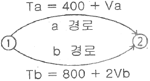
- Va=800대, Vb=200대
- Va=700대, Vb=300대
- Va=500대, Vb=500대
- Va=400대, Vb=600대
(정답률: 82%)
3. 교통수요 추정을 위한 기초자료로 사용되는 사회경제지표의 예측 모형 중 상한치(K)를 결정한 후 예측하는 기법은?
- 지수곡선법
- 최소제곱법
- 2차직선법
- 로지스틱곡선법
(정답률: 72%)
4. 가구통행실태조사에서 조사되는 항목이 아닌 것은?
- 통행 기ㆍ종점
- 통행목적
- 가구주차면수
- 통행수단
(정답률: 91%)
5. 도시교통의 일반적인 특성이 아닌 것은?
- 도시교통은 대량 수송을 필요로 한다.
- 도심과 같은 특정지역에 통행이 집중된다.
- 도시의 각 지점을 연결해주는 단거리 교통이다.
- 지역의 균형발전을 위한 지역 간 이동을 촉진한다.
(정답률: 67%)
6. 교통수요관리방안 중 차량수요를 감소시키기 위한 방법으로 가장 거리가 먼 것은?
- 재택근무
- 도심통행료 징수
- 대중교통이용의 편리화
- 램프미터링
(정답률: 100%)
7. Wardrop의 아래 원리를 무엇이라 하는가?
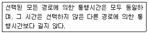
- 수요-공급의 평형
- 교통체계의 평형
- 사회적 평형
- 이용자 평형
(정답률: 75%)
8. 개별행태모형(disaggregate behavioral model)에 대한 설명으로 옳지 않은 것은?
- 확률적 효용이론에 근거한다.
- 종속변수는 통행량이며 독립변수는 사회경제지표다.
- 개인의 통행특성자료에 근거해서 교통수요를 추정한다.
- 개인의 행태를 반영하기 때문에 공간적ㆍ시간적으로 영향을 받지 않는다.
(정답률: 67%)
9. 다음 중 계획대상과 그 특성에 따라 계획하고자 하는 구체적 시설을 기준으로 교통계획을 분류한 것에 해당하는 것은?
- 장기교통계획
- 가로망계획
- 도시교통계획
- 교통축계획
(정답률: 75%)
10. 광역철도의 요건으로 옳지 않은 것은?(오류 신고가 접수된 문제입니다. 반드시 정답과 해설을 확인하시기 바랍니다.)
- 「대도시권 광역교통관리에 관한 특별법」에서 정의하고 있다.
- 표정속도가 50km/h 이상인 철도를 말한다.
- 둘 이상의 시ㆍ도에 걸쳐 운행되는 도시철도 또는 철도다.
- 전체 구간이 50km 이내이어야 한다.
(정답률: 56%)
11. 선호의식(Stated Preference)데이터와 선호결과(Revealed Preference)데이터에 대한 설명 중 옳은 것은?
- RP데이터는 현존하지 않는 대안에 대한 선호정보를 평가할 수 있다.
- SP데이터는 가상상황에 대한 대안을 평가할 수 없다.
- RP데이터는 대체안의 속성에 대한 다양한 형태의 자료를 얻을 수 있다.
- SP데이터는 1인의 회답자로부터 복수데이터를 얻을 수 있다.
(정답률: 94%)
12. 교통조사방법에서 조사결과의 보완 및 검증, 통행배정을 위해 실시하는 것은?
- 스크린라인 조사
- 폐쇄선 조사
- 교통존 조사
- 터미널 조사
(정답률: 95%)
13. A지역의 용도별 연면적이 상업시설 4000m2, 업무시설 3000m2, 주거시설 1000m2일 때 원단위법에 의한 이 지역의 주차수요는 얼마인가? (단, 각 용도별 연면적당 주차원단위(대/m2)는 상업시설이 0.21, 업무시설이 0.13, 주거시설이 0.⑤이다.)
- 1000대
- 1280대
- 1560대
- 1700대
(정답률: 67%)
14. 선형적 효용함수의 독립변수인 통행시간(분)과 통행비용(원)에 대한 계수가 각 -0.017, -0.00⑤일 때, 시간가치(value of time)는 얼마인가?
- 24원/분
- 29원/분
- 32원/분
- 34원/분
(정답률: 71%)
15. 통행실태조사 기법 중 차량번호판(License Plate) 조사에 관한 설명으로 옳은 것은?
- 조사지역이 넓고 교통량이 많은 경우 우편설문조사보다 적절한 방법이다.
- 조사 지점들 사이의 거리를 가능한 멀리하여야 보다 정확한 기ㆍ종점 정보의 수집이 가능하다.
- 차량을 정지시켜야 하기 때문에 안전상의 위험이 많다.
- 각 차량이 처음 관측된 곳을 기점으로, 마지막으로 관측된 곳을 종점으로 간주한다.
(정답률: 92%)
16. 패쇄선의 설정 시 고려할 사항으로 옳은 것은?
- 가급적 행정구역에 경계선과 일치시킨다.
- 가급적 다양한 토지이용이 포함되도록 한다.
- 대규모 도시일 경우 한 존에 1000~3000명을 포함시켜야 한다.
- 반드시 한 개의 간선도로가 존을 통과하도록 하여야 한다.
(정답률: 93%)
17. A지역에서 B지역으로 이동하는데에 버스와 지하철에 대한 효용함수값이 각각 -0.670, 지하철이 -0.870일 때, 버스를 선택할 확률은 얼마인가? (단, 교통수단은 버스와 지하철만 고려하며, 이항로짓모형을 따른다.)
- 약 43.5%
- 약 45.0%
- 약 55.0%
- 약 56.5%
(정답률: 60%)
18. 다음 중 통행분포(Trip Distribution)단계에서 사용하는 모형이 아닌 것은?
- 균일성장률법
- 중력모형
- 증감률법
- 간선기회모형
(정답률: 89%)
19. 수요함수가 V=10×P-0.4일 때, ① 가격(P)에 대한 수요탄력성과, ② 가격이 10% 증가할 때 수요의 증감은?
- ①-4.0, ② 4%증가
- ①-4.0, ② 4%감소
- ①-0.4, ② 4%감소
- ①-0.4, ② 4%증가
(정답률: 82%)
20. 다음 중 교통약자에 포함되지 않는 자는?
- 임산부
- 영유아를 동반한 자
- 청소년
- 고령자
(정답률: 93%)
2과목: 교통공학
21. 차량의 속도가 50km/h이고 교차로 폭이 20m인 도로에서의 적정 황색 시간은? (단, 차량의 감속도 : 4.5m/sec2, 차량길이 : 5m, 운전자 반응시간 : 1.5초)
- 약 4.84초
- 약 5.84초
- 약 8.⑤초
- 약 9.⑤초
(정답률: 64%)
22. 다음의 설명 중 틀린 것은?
- AADT는 연간 총 교통량을 365로 나눈 값이다.
- ADT는 3658일보다 적은 일 수 동안 조사된 총 교통량을 조사일 수로 나눈 값이다.
- AADT는 통상 ADT보다 작은 값을 갖는다.
- AADT와 ADT는 도로계획, 개선 등에 관한 분석에서 다양하게 쓰인다.
(정답률: 77%)
23. 신호교차로 접근로의 용량 산정 시, 기본 포화교통류율이 2200pcphgpl이 되는 이상적인 조건으로 틀린 것은?
- 경사가 없는 접근부
- 승용차만의 교통류
- 직진교통류만 구성
- 50%의 녹색신호
(정답률: 84%)
24. 신호교차로의 용량분석에서 포화도(Degree of Saturation)를 나타내는 식으로 옳은 것은? (단, C : 주기의 길이, u : 교통수요, S : 포화교통류율, g : 유효녹색시간)
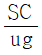
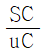
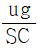
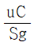
(정답률: 70%)
25. 시공도(Time-Space Diagram)에서 확인할 수 없는 사항은?
- 신호 옵셋
- 개별차량 속도
- 진행대폭
- 신호교차로 용량
(정답률: 53%)
26. 시간평균속도(Vt)와 공간평균속도(Vs)의 관계가 옳은 것은?
- Vt=Vs
- Vt≥Vs
- Vt≤Vs
- 일정한 관계가 성립되지 않는다.
(정답률: 73%)
27. 교통감응신호에 비해 정주기신호가 갖는 장점이 아닌 것은?
- 일반적으로 정주기신호기는 장비구조가 간단하고 정비가 용이한 편이다.
- 보행자 교통량이 적은 곳에 적용하기 좋다.
- 일정한 신호시간으로 운영되어 인접신호등과 연동시키기 편리하다.
- 검지기를 지난 후 정지한 차량이나 도로공사 등과 같이 정상적인 흐름을 방해하는 조건에 영향을 받지 않는다.
(정답률: 67%)
28. 속도조사의 목적으로 가장 거리가 먼 것은?
- 전후 조사를 통한 교통개선사업의 효과 평가
- 적절한 교통규제 및 제어시설의 결정
- 통행수단과 통행조건에 따른 교차로 기하설계 평가
- 차종별 속도평균, 속도변화추이 등의 판단 자료
(정답률: 65%)
29. 어느 도로구간의 교통량이 1200대/시간, 이 구간을 통행하는 차량의 평균속도가 30km/시간일 때의 밀도는?
- 40대/km
- 70대/km
- 100대/km
- 200대/km
(정답률: 93%)
30. 다음 중 통행시간 및 지체조사 방법으로 그 성격이 다른 하나는?
- 이동차량 방법(moving car method)
- 평균속도 방법(average car technique)
- 차량번호판 해독법(license place method)
- 교통류 적응방법(floating car technique)
(정답률: 84%)
31. 도로의 한 지점에서 관측한 개별 차량 6대의 순간속도가 아래와 같을 때, 공간평균속도는 얼마인가?
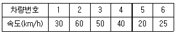
- 32.43km/h
- 33.06km/h
- 34.12km/h
- 35.32km/h
(정답률: 82%)
32. 도로 기하구조의 기준이 되는 속도로 운전자의 안전을 보장해주는 최대속도가 되는 것은?
- 지점속도(spot speed)
- 임계속도(optimum speed)
- 운전속도(operating speed)
- 설계속도(design speed)
(정답률: 95%)
33. 연속교통류의 교통량(Q, 대/시)과 밀도(D, 대/km)의 관계가 Q=-0.1D2+20D일 때, 최대 밀도는 얼마인가?
- 20대/km
- 50대/km
- 100대/km
- 200대/km
(정답률: 65%)
34. 첨두시간의 교통상황을 알아보기 위해 조사한 교통량이 아래와 같을 때, 첨두시간계수는 얼마인가?
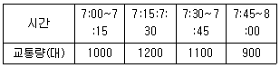
- 0.757
- 0.782
- 0.875
- 0.914
(정답률: 86%)
35. 시간당 평균 교통량이 2000대인 도로의 한 지점에 3초간 2대의 차량이 도착할 확률은? (단, 차량의 도착은 포아송(Poisson)분포를 따른다고 가정한다.)
- 0.159
- 0.211
- 0.263
- 0.315
(정답률: 72%)
36. 차량추종모형(car following theory)에서 운전자의 반응 시간과 관련하여 고려하는 변수로 거리가 먼 것은?
- 운전자 민감도
- 차량 속도
- 차량 위치
- 차량군의 밀도 차이
(정답률: 75%)
37. 노면과 타이어 상태에 따른 미끄럼 마찰계수가 가장 큰 상태는?
- 습윤-마모된 타이어
- 건조-양호한 타이어
- 건조-마모된 타이어
- 습윤-양호한 타이어
(정답률: 59%)
38. 포화용량(s, vphgpl)과 포화차두시간(h, 초)과의 관계가 옳은 것은?
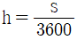
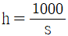
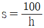
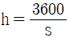
(정답률: 82%)
39. 속도-밀도 모형에 대한 설명이 가장 옳은 것은?
- Greenshield의 직선모형은 사용하기가 간평하며 밀도가 매우 높거나 낮은 경우에도 직선관계가 나타난다.
- Greenshield의 로그모형은 밀도가 높은 부분에서 정확한 관계를 추출할 수 있으나, 밀도가 낮은 경우 속도를 밀도로 설명하기 힘들어진다.
- Underwood의 지수모형은 밀도가 높은 경우의 속도를 정확히 산출하기 때문에 고속에서의 속도 추정값이 현장 측정값과 동일하게 나타난다.
- Greenshield의 식에 의하면 밀도가 최대가 되면 속도는 최대 속도의 1/2이 된다.
(정답률: 53%)
40. 소요현시율의 합이 0.85, 총 손실시간이 16초일 때, Webster 방식에 의한 적정 주기는?
- 136초
- 152초
- 174초
- 193초
(정답률: 알수없음)
3과목: 교통시설
41. 도시지역의 일반도로에 설치하는 중앙분리대의 최소 폭 기준은? (단, 자동차 전용도로의 경우는 고려하지 않는다.)
- 1.0m
- 1.5m
- 2.0m
- 3.0m
(정답률: 50%)
42. 평면교차로에서의 도류화 설계를 위한 기본원칙으로 옳지 않은 것은?
- 곡선부는 적절한 곡선반지름과 폭을 가져야 한다.
- 운전자가 한 번에 한 가지 이상의 의사결정을 하지 않도록 해야 한다.
- 교통제어시설은 교통섬과 분리하여 설계하여야 한다.
- 속도와 경로를 점진적으로 변화시킬 수 있도록 접근로의 단부를 처리해야 한다.
(정답률: 89%)
43. 도로의 안전시설 및 부대시설에 대한 설명으로 옳지 않은 것은?
- 지하차도에서 오른쪽 길어깨의 폭을 2.5m 미만으로 하는 경우 비상주차대를 설치하여야 한다.
- 긴급제동시설의 형식은 부설 재료에 따라 모래더미 형식과 골재부설 형식으로 크게 구분할 수 있다.
- 규모에 따른 휴게시설의 종류는 일반휴게소, 화물차 휴게소, 쉼터휴게소, 간이휴게소가 있다.
- 버스정류소는 버스승객의 승ㆍ하자를 위하여 본선의 외측차로를 그대로 이용할 경우 그 공간을 의미한다.
(정답률: 74%)
44. 주차장에 1시간 동안 180대의 차량이 도착한다면, 1분 동안 차량이 한 대도 도착하지 않을 확률은?
- 약 5%
- 약 6%
- 약 7%
- 약 8%
(정답률: 70%)
45. 회전교차로(Roundabout)에 관한 설명 중 옳지 않은 것은?
- 회전교차로의 진입차량이 회전차량 보다 통행우선권을 갖는다.
- 일반적인 교차로에 비해 상충지점수가 적다.
- 자동차는 교차로 중앙의 원형 교통섬을 우회하여 교차로를 통과한다.
- 신호교차로에 비해 유지관리의 부담이 적다.
(정답률: 85%)
46. 시설한계 기준이 옳지 않은 것은?
- 자전거도로의 시설한계 높이는 3m 이상으로 한다.
- 소형차도로의 경우 시설한계 높이를 3m 까지 축소가능하다.
- 보도의 시설한계 높이는 2.5m 이상으로 한다.
- 집산도로의 경우 시설한계 높이를 4.2m 까지 축소가능하다.
(정답률: 84%)
47. 평면교차와 그 접속기준에 대한 내용이 옳은 것은?
- 교차하는 도로의 교차각은 45˚ 이상이 되도록 한다.
- 교차로의 종단경사는 3% 이하이어야 한다.
- 평면으로 교차하거나 접속하는 구간에 설치하는 변속차로에 관한 사항은 관할 경찰청장이 정한다.
- 교차로에서 좌회전차로가 필요한 경우에는 직진차로와 통합하여 설치하여야 한다.
(정답률: 71%)
48. 자전거 교통을 분리할 것인가를 판단하는 기준에 해당하지 않는 것은?
- 자전거의 교통량
- 자전거의 주행속도
- 자동차의 교통량
- 자동차의 주행속도
(정답률: 67%)
49. 도로의 구분에 따른 설계기준자동차의 연결이 옳지 않은 것은?
- 고속도로 : 세미트레일러
- 주간선도로 : 세미트레일러
- 보조간선도로 : 대형자동차
- 집산도로 : 승용자동차
(정답률: 75%)
50. 정지시거에 대한 설명에서 ①과 ②에 들어갈 말이 모두 옳은 것은?
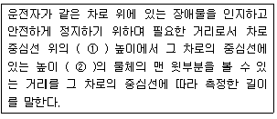
- ①1.0m, ②15cm
- ①1.2m, ②15cm
- ①1.0m, ②10cm
- ①1.2m, ②10cm
(정답률: 81%)
51. 각 도로의 접근성과 이동성의 관계를 나타낸 아래 그림에서 ①~④에 해당하는 기능별 도로의 종류가 모두 옳은 것은? (단, : 접근성,
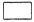
: 이동성)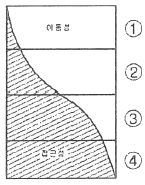
- ①고속도로 ②국지도로 ③간선도로 ④ 집산도로
- ①고속도로 ②간선도로 ③집산도로 ④ 국지도로
- ①국지도로 ②집산도로 ③고속도로 ④ 간선도로
- ①국지도로 ②집산도로 ③간선도로 ④ 고속도로
(정답률: 92%)
52. 도로와 철도가 평면교차하는 경우 그 도로의 구조 기준에 대한 설명이 옳지 않은 것은?
- 건널목 앞쪽 5m 지점에 있는 도로 중심선 위의 1m 높이에서 가장 멀리 떨어진 선로의 중심선을 볼 수 있는 곳까지의 거리를 선로방향으로 측정한 길이를 가시구간의 길이라 한다.
- 건널목의 양측에서 각각 30m 이내 구간(건널목 부분을 포함한다.) 도로의 종단경사는 3% 이하로 한다.
- 가시구간의 최소길이는 건널목에서의 철도차량의 최고속도에 따라 110~350m 로 한다.
- 철도와의 교차각은 30`도 이상으로 한다.
(정답률: 79%)
53. 다음 중 비상주차대의 유효길이 산정과 가장 관계깊은 것은?
- 설계기준 자동차 길이
- 접속길이
- 도로의 설계속도
- 집입속도
(정답률: 61%)
54. 평면곡선부에 완화곡선을 설치함으로써 얻는 이점으로 옳지 않은 것은?
- 고속에서 승객의 안정감을 유지할 수 있다.
- 일정한 주행속도 및 주행궤적을 유지시킨다.
- 도로의 설계속도를 증진시킨다.
- 선형을 시각적으로 원활하게 보이도록 한다.
(정답률: 89%)
55. 도로가 건설된 지역의 AADT가 59000대/일, 설계시간계수(K)가 0.09, 중방향계수(D)가 0.60, 첨두시간계수(PHF)가 0.90인 지역의 첨두설계시간교통량(PDDHV)은?
- 2967 대/시/방향
- 3186 대/시/방향
- 3540 대/시/방향
- 7965 대/시/방향
(정답률: 70%)
56. 곡선반경(R)이 150m 평면곡선을 80km의 속도로 주행하는 차량이 있다. 마찰계수가 0.2일 때, 이 평면곡선에서 차량이 미끄러지지 않기 위한 최대편경사는?
- 약 0.11
- 약 0.14
- 약 0.17
- 약 0.19
(정답률: 60%)
57. 다음 중 평면교차로 설계의 기본원리로 옳지 않은 것은?
- 상충의 횟수로 최소화 시킨다.
- 분ㆍ합류를 단순화시키고 일관성을 유지한다.
- 교통량이 많고 속도가 높은 교통류에 우선권을 부여한다.
- 상충지점의 면적을 최대화 시킨다.
(정답률: 93%)
58. 설계속도가 80km/h 인 도로에서 확보하여야 하는 최소정지시거 기준은?
- 155m
- 130m
- 110m
- 95m
(정답률: 59%)
59. 중앙분리대에 대한 설명으로 옳지 않은 것은?
- 차로수가 4차로 이상인 고속도로에 대해서는 반드시 중앙분리대를 설치하는 것으로 한다.
- 중앙분리대 내에는 시설물을 설치할 수 있다.
- 차로를 왕복 방향별로 분리하기 위하여 중앙선을 두 줄로 표시하는 경우 각 중앙선의 중심 사이의 간격을 0.25m 이상으로 한다.
- 중앙분리대는 분리대와 측대로 구성된다.
(정답률: 73%)
60. 오르막차로의 설치시 검토할 유의사항이 아닌 것은?
- 고속 자동차와 저속 자동차의 구성비
- 오르막 경사의 낮춤과 오르막차로 설치의 경제성
- 오르막 차로 설치에 따른 교통사고 예방 효과
- 오르막차로와 연결도로의 주행속도
(정답률: 56%)
4과목: 도시계획개론
61. 다음 중 도시계획시설로서의 도로의 규모별 구분이 옳지 않은 것은?
- 소로1류-폭 10m 이상 12m 미만인 도로
- 소로1류-폭 15m 이상 20m 미만인 도로
- 대로1류-폭 35m 이상 40m 미만인 도로
- 광로1류-폭 70m 이상인 도로
(정답률: 71%)
62. 제1종 지구단위계획구역으로 지정할 수 있는 대상 지역이 아닌 것은?
- 용도지구
- 자연환경보전지역
- 「주택법」에 따른 대지조성사업지구
- 「관광진흥법」에 따라 지정된 관광특구
(정답률: 34%)
63. 계획이론에 대한 허드슨(Hudson)의 분류에서 린드블룸(Lindblom)이 주창한 것으로 지속적인 조정과 적용을 통해 계획의 목표를 추구하는 접근 방법을 제시한 계획의 목표를 추구하는 접근 방법을 제시한 계획이론은?
- 종합적 계획(Synoptic Planning)
- 점진적 계획(Incremental Planning)
- 교류적 계획(Transactive Planning)
- 옹호적 계획(Asvocacy Planning)
(정답률: 82%)
64. 다음 중 하워드(E. Howard)가 제시한 전원도시(garden city)에 대한 설명으로 옳지 않은 것은?
- 인구는 소규모로 제한한다.
- 전원적 성격을 유지하기 위하여 공업기능을 배제한다.
- 토지 투기를 막기 위하여 토지는 공유화한다.
- 도시 주변에 넓은 농업지대를 확보하여야 한다.
(정답률: 83%)
65. 다음 중 도시기본계획을 수립하여야 하는 자는?
- 도지사
- 국토해양부장관
- 시장 또는 군수
- 도시계획위원회
(정답률: 54%)
66. 산업사회의 토지이용에 대한 설명으로 옳지 않은 것은?
- 토지의 사유권이 최대한으로 인정되어 자유경쟁하에 놓여졌다.
- 자본주의의 모순이 심화되면서 사회주의가 등장하고, 사회주의 국가에서 토지소유권은 국가에 귀속되었다.
- 토지의 상품경제적 요인이 작용하여 과밀, 난개발이 만연하였다.
- 전체적으로 토지이용은 상업자본의 영향을 받았고, 권력적 요인이 지배적이다.
(정답률: 42%)
67. 계획인구 산정 시 사회경제적 요인에 의한 방법이 아닌 것은?
- 취업인구에 따른 방법
- 최소자승법
- 비교유추에 의한 방법
- 토지이용계획에 의한 방법
(정답률: 47%)
68. 도시인구예측모형 중 인구가 처음에는 완만하게 증가하다가 어느 시점을 지나면서 급격히 증가하고 다시 완만하게 증가하며, 성장의 물리적 한계가 있는 도시의 인구 예측에 적용이 가능한 것은?
- 선형모형
- 지수성장모형
- 로지스모형
- 비율예측방법
(정답률: 44%)
69. C. A. Perry의 근린주구에 대한 설명 중 옳지 않은 것은?
- 근린주구의 규모는 대체로 하나의 초등학교가 필요한 정도의 인구에 대응하는 규모를 갖도록 한다.
- 근린주구는 충분한 간선도로에 의해 구획되는 경계를 갖고 통과교통이 통과하지 않고 우회할 수 있도록 한다.
- 오픈스페이스는 각 근린주구의 요구에 부합되도록 소공원과 레크레이션 공간체계를 갖도록 한다.
- 서비스 공간을 갖는 학교와 기타 공공시설은 단지의 외곽에 위치시킨다.
(정답률: 85%)
70. 특별시ㆍ광역시ㆍ시 또는 군의 관할 구역에 대하여 기본적인 공간구조와 장기발전방향을 제시하는 종합계획으로 도시관리계획 수립의 지침이 되는 계획은?
- 도시계획
- 광역도시계획
- 도시기본계획
- 지구단위계획
(정답률: 75%)
71. 국토의 계획 및 이용에 관한 법률에 의한 기반시설의 대분류 중 교통시설에 해당하지 않는 것은?
- 주차장
- 궤도
- 광장
- 운하
(정답률: 77%)
72. 도시 및 주거환경정비법에 따른 정비사업에 관한 설명으로 옳지 않은 것은?
- 주택재건축사업은 정비기반시설은 양호하나 노후ㆍ불량 건축물이 밀집한 지역에서 주거환경을 개선하기 위하여 시행하는 사업이다.
- 도시환경정비사업은 상업지역, 공업지역 등으로서 토지의 효율적 이용과 도심 또는 부도심 등 도시기능의 회복이나 상권활성화 등이 필요한 지역에서 도시환경을 개선하기 위하여 시행하는 사업이다.
- 주택재건축사업의 경우, 정비구역이 아닌 구역에서 시행하는 주택재건축사업을 포함한다.
- 주택재개발사업은 도시저소득주민이 집단으로 거주하는 지역으로서 정비기반시설이 극히 열악하고 노후ㆍ불량 건축물이 과도하게 밀집한 지역에서 주거환경을 개선하기 위하여 시행하는 사업이다.
(정답률: 43%)
73. 혼잡한 주요도로의 교차지점에서 각종 차량과 보행자를 원활히 소통시키기 위하여 필요한 곳에 설치하는 교통광장은?
- 근린광장
- 교차점광장
- 주요시설광장
- 역전광장
(정답률: 69%)
74. 공공기관 지방이전을 계기로 지역의 성장 거점지역에 조성되는 미래형 도시로, 이전된 공공기관과 지역의 산ㆍ학ㆍ연ㆍ관이 서로 협력하여 새로운 성장 동력을 창출하는 기반이 되는 것은?
- 행정중심복합도시
- 혁신도시
- 기업복합도시
- 스마트시티
(정답률: 67%)
75. 다음 중 도시의 토지와 시설에 대한 물리적 계획의 3대 요소에 해당하지 않는 것은?
- 밀도
- 인구
- 배치
- 동선
(정답률: 50%)
76. 다음 중 과거 두 시점 간의 국가경제, 지역경제, 산업구조 등을 분석하여 당해 지역의 어떤 산업이 건전하게 성장하는가 또는 성장할 것인가를 동태적으로 파악하는 방법은?
- 지역성장모형(Regional Growth Theory)
- 경제기반이론(Economic Base Theory)
- 변이할당분석(Shift-Share Analysis)
- 투입산출분석(Input-Output Analysis)
(정답률: 67%)
77. Kevin Lynch가 주장한 도시의 이미지를 결정하는 구성요소에 해당하지 않는 것은?
- 통로(path)
- 결절점(node)
- 상징물(landmark)
- 광장(square)
(정답률: 85%)
78. 최근의 도시계획 패러다임과 맞지 않는 것은?
- 지속가능한 고시개발로의 전환
- 도ㆍ농 통합적 계획으로의 전환
- 입체적ㆍ기능 통합적 토지이용관리 강화
- 관리 위주에서 성장 위주로의 관리성장기능 강화
(정답률: 47%)
79. 도시지역과 그 주변지역의 무질서한 시가화를 방지하고 계획적ㆍ단계적인 개발을 도모하기 위하여 일정기간 동안 시가화를 유보할 필요가 있다고 인정되는 경우 도시관리계획으로 결정할 수 있는 구역은?
- 시가화예정구역
- 시가화조정구역
- 개발제한구역
- 개발예정구역
(정답률: 76%)
80. 근대 도시화 과정에서 도시문제를 해결하고자 하였던 이상도시계획안과 그 제안자의 연결이 옳은 것은?
- 팔란스테르(Phalanstere)- 푸리에(C. Fourier)
- 선형도시(Linear City)-솔트(T. Salt)
- 공업도시(Une Cite Industrielle)-풀만(Pullman)
- 솔테어(Saltaire)-리차드슨(Richardson)
(정답률: 31%)
5과목: 교통관계법규
81. 모든 차의 운전자가 차를 정차하거나 주차하여서는 아니되는 장소 기준이 옳은 것은?
- 도로의 모퉁이로부터 5m 이내인 곳
- 횡단보도로부터 5m 이내인 곳
- 건널목의 가장자리로부터 7m 이내인 곳
- 화재경보기로부터 10m 이내인 곳
(정답률: 59%)
82. 주차장법규상 평행주차형식 외의 경우 장애인전용 주차단위구획의 기준이 옳은 것은?
- 너비 2.3m 이상, 길이 5.0m 이상
- 너비 2.0m 이상, 길이 3.6m 이상
- 너비 2.0m 이상, 길이 4.5m 이상
- 너비 3.3m 이상, 길이 5.0m 이상
(정답률: 87%)
83. 다음 중 광역시ㆍ시 또는 군의 도로원표의 위치를 정할 수 있는 자는?
- 행정안전부장관
- 군수
- 국토해양부장관
- 도지사
(정답률: 43%)
84. 교통행정기관이 운행기록장치 장착의무자 및 차량운전자로부터 제출받은 운행기록을 점검ㆍ분석하여 운행기록장치 장착의 무자 및 차량운전자에 취할 수 있는 조치 사항이 아닌 것은?
- 교통안전점검의 실시
- 허가ㆍ등록의 취소
- 교통안전진단의 실시
- 교통수단 및 교통수단운형체계 개선 권고
(정답률: 79%)
85. 시장 등은 해당하는 시설의 주변도로 가운데 일정 구간을 어린이 보호구역으로 지정하여 자동차 등의 통행속도를 얼마 이내로 제한할 수 있는가?
- 시속 20킬로미터
- 시속 15킬로미터
- 시속 30킬로미터
- 시속 40킬로미터
(정답률: 75%)
86. 안전표지의 크기는 교통상황에 따라 기본규격보다 확대 또는 축소할 수 있다. 다음 중 고속도로(자동차전용도로포함)의 경우 규정된 확대비율에 해당하지 않는 것은?
- 1.3배
- 1.5배
- 2배
- 2.5배
(정답률: 59%)
87. 다음 ()에 해당하는 것은?
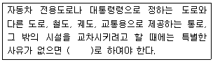
- 입체교차시설
- 일방통행시설
- 회전교차시설
- 평면교차시설
(정답률: 94%)
88. 도로교통법규상 차로를 설치할 수 없는 곳은?
- 다리 위
- 터널 내
- 횡단보도
- 고가도로
(정답률: 78%)
89. 도로법령상 차량의 운행제한에 대한 내용이 옳은 것은?
- 축하중이 10톤을 초과하거나 총중량이 40톤을 초과하는 차량은 운행을 제한할 수 있다.
- 운행 제한 표지에는 구간, 공사비용, 도로 점용 공사기관(시행처)을 명시해 두어야 한다.
- 차량의 운행을 제한하려는 경우에는 그 운행을 제한하는 구간의 좌측에 관련 내용을 명시한 표지를 설치하여야 한다.
- 관리청은 천재지변이나 그 밖의 비상사태에도 규정된 차량 이외의 차량에 대한 운행을 제한할 수 없다.
(정답률: 56%)
90. 기계식주차장의 설치기준에 관하여 아래 ()에 공통으로 들어갈 말이 옳은 것은?
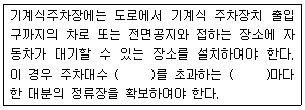
- 10대
- 20대
- 30대
- 50대
(정답률: 69%)
91. 교통혼잡 특별관리구역과 특별관리시설물의 설치 기준이 틀린 것은? (단, 혼잡시간대란 일정한 구역을 둘러싼 편도 3차로 이상 도로 중 적어도 1개 이상 도로의 시간대별 평균 통행속도가 시속 10km 미만인 상태를 뜻한다.
- 교통혼잡 특별관리구역-혼잡시간대가 토ㆍ일요일과 공휴일을 제외한 평일 평균 하루 3회 이상 발생할 것
- 교통혼잡 특별관리구역-혼잡시간대에 그 구역으로 진입하거나 진출하는 교통량이 해당 도로 한쪽 방향 교통량의 15% 이상을 차지할 것
- 교통혼잡 특별관리시설물-시설물이 유발하는 교통량으로 인하여 해당 시설물의 주 출입구에 접한 도로의 혼잡시간대가 시설물이 유발하는 교통량이 토ㆍ일요일과 공휴일을 포함한 주 중 가장 많은 ㅈ날을 기준으로 하루 3회 이상 발생할 것
- 교통혼잡 특별관리시설물-혼잡시간대에 해당 도로를 통하여 해당 시설물로 진입하거나 진출하는 교통량이 그 도로 한쪽 방향 교통량의 15% 이상일 것
(정답률: 58%)
92. 도시교통정비촉진법상 국토해양부장관이 도시교통정비지역으로 지정ㆍ고시할 수 있는 인구 규모 기준은? (단, 도농복합형태의 시의 경우는 고려하지 않는다.)
- 인구 5만명 이상의 도시
- 인구 10만명 이상의 도시
- 인구 15만명 이상의 도시
- 인구 20만명 이상의 도시
(정답률: 80%)
93. 도시교통정비촉진법상 도시교통정비 기본계획에 포함되어야 할 사항이 아닌 것은?
- 투자사업 계획 및 재원조달 방안
- 교통시설의 개선
- 도시교통의 현황 및 전망
- 생활권 및 인구배분계획
(정답률: 67%)
94. 도로 관리청이 도로구역을 입체적도로구역으로 정한 경우 그 도로의 구조를 보전하거나 교통의 위험을 방지하기 위하여 필요하다고 인정하는 경우, 그 도로에 상하의 범위를 정하여 지정할 수 있는 것은?
- 접도구역
- 연도구역
- 고속교통구역
- 도로보전입체구역
(정답률: 22%)
95. 국토를 토지의 이용실태 및 특성, 장래의 토지 이용 방향등을 고려하여 구분한 용도지역에 해당하지 않는 것은?
- 도시지역
- 농림지역
- 관광지역
- 자연환경보전지역
(정답률: 50%)
96. 일반도로의 기능별 구분 중 보조간선도로에 해당하지 않는 도로법에 따른 도로의 종류는?
- 군도
- 지방도
- 특별시도
- 일반국도
(정답률: 50%)
97. 설계속도에 대한 설명으로 틀린 것은?
- 도시지역 주간선도로의 설계속도는 시속 80km 이상이다.
- 표준 설계속도에서 10km 이내의 속도를 뺀 속도를 설계속도로 할 수 있다.
- 자동차 전용도로가 도시지역에 있거나 소형차도로일 경우에는 설계속도를 시속 60km 이상으로 할 수 있다.
- 설계속도는 동일한 등급의 도로인 경우, 도시지역과 지방지역이 동일하다.
(정답률: 47%)
98. 도로를 굴착하여 공작물을 신설하려는 자가 그 점용에 관한 사업계획서와 관련 서류를 관리청에 제출하여야 하는 시기 기준에 해당하지 않는 것은?
- 1월중
- 4월중
- 8월중
- 10월중
(정답률: 56%)
99. 도로교통법규에 따른 안전표지의 설명이 옳은 것은?
- 규제표지는 도로상태가 위험하거나 도로 또는 그 부근에 위험물이 있는 경우에 필요한 안전조치를 할 수 있도록 이를 도로 사용자에게 알리는 표지를 말한다.
- 지시표지는 주의표지ㆍ규제표지 또는 보조표지의 주기능을 보충하여 도로사용자에게 알리는 표지를 말한다.
- 주의표지는 도로교통의 안전을 위하여 각종 제한ㆍ금지등의 규제를 하는 경우에 이를 도로사용자에게 알리는 표지를 말한다.
- 노면표시는 도로교통의 안전을 위하여 각종 주의ㆍ규제ㆍ지시 등의 내용을 노면에 기호ㆍ문자 또는 선으로 도로사용자에게 알리는 표지를 말한다.
(정답률: 55%)
100. 도시교통정비촉진법상 도시교통정비지역에서 기본계획ㆍ중기계획 및 시행계획과 조화를 이루도록 하여야 하는 계획으로 규정되어 있지 않는 것은?
- 도시철도법 제3조의2에 따른 도시철도기본계획
- 도시ㆍ군기본계획
- 도로정비기본계획
- 도시계획시설계획
(정답률: 69%)
6과목: 교통안전
101. 다음 중 교통사고 다발 또는 법규위반 빈발자의 성격으로 거리가 먼 것은?
- 감정이 격하면서 흥분을 잘하는 성격
- 침착하지 목하고 덜렁거리는 성격
- 운동신경이 우둔하고 행동이 민첩하지 못한 성격
- 일기나 감정 등의 자극에 저항력이 강한 성격
(정답률: 80%)
102. 교통사고의 원인을 규명함에 있어 중요한 사항이 아닌 것은?
- 사고당사자의 진행 방향
- 2차 충돌의 유무
- 충동한 접촉부위 및 방향
- 사고운전자의 나이
(정답률: 78%)
103. 승용차가 평지에서 앞 차량과의 추돌을 피하기 위해 급정거 하였으나 아스팔트 포장면에서 40m, 갓길에서 25m를 미끄러진 후 정지하였을 때, 이 차량의 갓길 활주시작점의 초기속도는 얼마인가? (단, 마찰계수는 아스팔트 포장면에서 0.5, 갓길에서 0.6이었다.)
- 61.7 km/h
- 65.6 km/h
- 71.3 km/h
- 94.3 km/h
(정답률: 44%)
104. 교차로의 3년간 연평균 교통사고건수는 35건, 사고감소율 15%, ADT가 4000대이다. 이 교차로에 교통안전사업을 시행하였을 때, 3년간 연평균 교통사고 감소건수는? (단, 3년 후 장래 예측 ADT는 6000대이다.)
- 6.38건
- 7.88건
- 8.38건
- 9.88건
(정답률: 86%)
1⑤. 다음 중 상충조사(conflict studies)의 목적이 아닌 것은?
- 도로의 문제지점에서의 기하설계요소를 평가하기 위해 실시한다.
- 상충을 이용하여 사고의 위험성을 평가하기 위해 실시한다.
- 사전ㆍ사후조사를 통한 교통안전개선사업의 효과를 분석하기 위해 실시한다.
- 교통사고로 인한 소통 문제구간을 파악하기 위해 실시한다.
(정답률: 79%)
106. 주행 중이던 A차량이 주차해 있던 B차량과 충돌하여 15m를 함께 미끄러져 정지하였다. A와 B차량의 무게가 각각 1000km, 900km일 때, A차량의 충돌 전 초기 속도는? (단, 마찰계수는 0.7이며, 경사는 없고 완전비탄성충돌이라고 가정한다.)
- 약 71.5km/h
- 약 82.6km/h
- 약 89.5km/h
- 약 98.1km/h
(정답률: 54%)
107. 도로의 위험도지수를 산출할 때 고려하는 사항이 아닌 것은?
- 연간 교통사고건수
- 사고율
- 사고피해정도
- 사고 연령
(정답률: 94%)
108. 교차로에서 황색신호가 켜지는 순간에 그대로 진행하더라도 교차로 통과가 가능하고, 임계감속도로 감속하더라도 정지선에 어려움없이 정지할 수 있는 구간의 명칭과 원인이 모두 옳은 것은?
- Dilemma Zone-황색신호시간＞적정황색신호시간
- Safety Zone-황색신호시간＜적정황색신호시간
- Option Zone-황색신호시간＞적정황색신호시간
- Clear Zone-황색신호시간-적정황색신호시간
(정답률: 58%)
109. 교통사고 발생 시, 당사자들의 부상정도가 경미하거나 대물피해만 발생한 경우에는 당사자들 간의 합의나 보험처리 등으로 해결하는 경향이 강하다. 이러한 잘 보고되지 않는(under-reported) 사고가 교통사고다발지역 분석에 미치는 영향을 최소화할 수 있는 장점을 가진 선정방법은?
- 사고건수법(Accident Nuber Method)
- 사고율법(Accident Rate Method)
- 사고심각도법(Accident Severity Method)
- 사고밀도법(Accident Density Method)
(정답률: 62%)
110. 교통안전시설을 설치함에 있어 기본 요구조건에 해당하지 않는 것은?
- 복잡해도 의미만 전달하면 된다.
- 설치 목적을 충분히 달성하여야 한다.
- 운전자의 주의를 끌 수 있어야 한다.
- 반응을 위한 시간적인 여유를 가질 수 있는 곳에 설치 되어야 한다.
(정답률: 85%)
111. 제한된 시거에 의해 발생하는 비신호교차로에서의 직각 충돌에 대한 일반적 예방책으로 적절하지 않은 것은?
- 기각주차제한
- 가로조명개선
- 횡단보도설치
- 시야장애물 제거
(정답률: 91%)
112. 교통안전법령상 그 다음 연도의 교통사고 원인조사 대상에서 제외하는 경우는?
- 최근 3년간 사망사고 3건 이상 발생하여 해당 구간의 교통시설에 문제가 있는 것으로 의심되는 도로
- 최근 3년간 중상사고 이상의 교통사고가 10건 이상 발생하여 해당 구간의 교통시설에 문제가 있는 것으로 의심 되는 도로
- 교차로 또는 횡단보도 및 그 경계선으로부터 150m까지의 도로 지점
- 교통시설 개선사업을 실시한 도로구간
(정답률: 53%)
113. 도로의 포장층에 차량 진행의 종방향 또는 횡방향으로 흠을 내어 노면과 타이어의 마찰 저항을 높이고, 우천시 배수를 원활히하여 수막현상을 완화함으로써 미끄럼을 방지하는 공법은?
- 그루빙(grooving)
- 노면평삭(planing)
- 숏 블라스팅(shot blasting)
- 개립도 마찰층(Open-Graded Friction Course)
(정답률: 60%)
114. 교차로에서 좌회전으로 인한 사고가 빈번할 때 조사되어야 할 항목이 아닌 것은?
- 좌회전 신호의 유무
- 좌회전 자로의 유무
- 좌회전 보행자의 유무
- 좌회전 교통량
(정답률: 80%)
115. 교차로에서 5년간 발생한 교통사고가 10건이고, 일평균 교통량이 2000대일 경우 차량 1백만대당 사고율은?
- 2.14건
- 2.74건
- 3.12건
- 3.90건
(정답률: 67%)
116. 2대 이상의 자동차가 동일한 방향으로 주행하던 중 뒷차가 앞차의 후면을 충격한 사고를 무엇이라 하는가?
- 충돌
- 전도
- 전복
- 추돌
(정답률: 85%)
117. 영국의 스미드(R.J. Smeed)가 1938년에 발표한 교통사고 예측 모형에서 교통사고 사망자수를 나타내는데 이용한 변수로만 나열된 것은?
- 인구수, 자동차 보유대수
- 자동차 보유대수, 면허소지자 수
- 인구수, 국민 총 생산
- 도로길이, 화물유통량
(정답률: 91%)
118. 운전자의 운전능력과 운전자에 대한 환경적 요구에 관한 설명으로 옳지 않은 것은?
- 운전능력이 환경적 요구에 부응하지 못할 때 사고가 발생한다.
- 운전자에 대한 환경적 요구는 시간에 따라 변한다.
- 운전자는 일어나는 상황에 반응만 할 뿐, 새로운 상황을 발생시키지는 않는다.
- 운전자의 능력은 운전자의 특성에 영향을 받는다.
(정답률: 78%)
119. 한 차량이 30m 거리를 미끄러진 후 5m 높이의 언덕에서 추락하였다. 추락 지점의 수직선 아래 지점에서부터 추락지점까지의 수평가리가 10m라면 초기속도는 얼마인가? (단, 마찰계수는 0.5이다.)
- 61.3 km/시
- 66.3 km/시
- 71.3 km/시
- 76.3 km/시
(정답률: 50%)
120. 교통사고를 줄이기 위한 3E 중 규제(Enforcement)와 관련된 대책에 해당하지 않는 것은?
- 속도제한의 실시
- 양보 및 정지 규제의 실시
- 무단횡단의 금지
- 사고다발지점의 개선
(정답률: 84%)